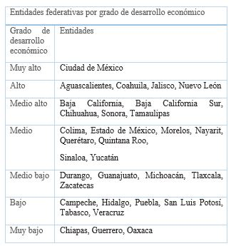

Experiencias

¿Qué vimos hoy?


Lenguaje
Jueves 23 de Abril
Responde a las preguntas de los videos ya sea a través de un escrito, dibujo o esquema y guárdalas en tu carpeta de experiencias.
Del video Cómo se hace el papel:
- ¿Qué te gustó más del video?
- En el video ¿qué palabras te indican el orden temporal?, es decir, ¿qué se hace primero y qué se hace después durante en el proceso de fabricación?
- ¿Qué recomendaciones se hacen para cuidar el medio ambiente?
- ¿Puedes describir con tus propias palabras cómo se hace el papel?
- Anota en una hoja los pasos principales que se siguieron en el proceso de fabricación del papel
De los videos Cómo se hacen las canicas de vidrio y ¿Cómo lo hacen? – Chocolate, elije el proceso que te haya gustado más y contesta las siguientes preguntas:
- ¿Qué diagrama utilizarías para resumir y ordenar la información?
- ¿Qué información presentarías en cada apartado?
- ¿Cuál es la utilidad de un diagrama al redactar el proceso de elaboración de un producto?
- ¿Para qué se utilizan las flechas?
- Explica cómo es el proceso de fabricación de un producto que conozcas.
Actividades adicionales:
Si quieres practicar más sobre este tema, te invitamos a realizar la siguiente actividad:
Elabora un esquema que te ayude a describir el proceso de elaboración de tu platillo o postre favorito. Si no sabes cómo es el proceso pregunta a tu mamá, papá o alguien que lo conozca. Si tienes libros de recetas o internet, puedes también consultar ahí la receta. Te recomendamos usar un esquema como el siguiente:
Proceso para elaborar:
Primero:
Después:
A continuación:
Finalmente:
Agrega todos los cuadros que sean necesarios para describir bien tu proceso y contesta las siguientes preguntas en una hoja: ¿qué ventajas tiene seguir el proceso de elaboración de un producto?, ¿qué pasa si no lo sigues?
Video 1.- Fabricación del papel – Historia del papel
https://youtu.be/pbhBhygvXeA
Video 2.- Como se hacen las canicas de vidrio
https://youtu.be/suz0JxkDLhQ
Video 3.- ¿Cómo lo hacen? – Chocolate
https://youtu.be/UqwPrQUA_sY
Matemáticas
Jueves 23 de Abril
Responde a las preguntas de los videos ya sea a través de un escrito, dibujo o esquema y guárdalas en tu carpeta de experiencias.
Del video Las sucesiones y los patrones:
- ¿Cuáles son las estrategias que utilizas para encontrar un patrón de una sucesión de figuras?, ¿por sus atributos como el color o por sus características, como la forma?
- Para ti, ¿qué es una sucesión compuesta?
Del video La sucesión:
- ¿Cuáles son los elementos de las sucesiones?
- ¿Por qué es importante el orden en una sucesión?
- Observa a tu alrededor, ¿identificas algún patrón?, ¿cómo lo podrías representar matemáticamente? También lo puedes intentar haciendo tus propios dibujos.
Actividades adicionales:
Si quieres practicar más sobre este tema, te invitamos a realizar la siguiente actividad:
En una hoja haz una sucesión de figuras o de números como las que viste en los videos. Piensa en el patrón que quieras seguir. Haz el dibujo de las cinco primeras figuras de tu sucesión o si es numérica escribe los cinco primeros términos. Un ejemplo puede ser la siguiente: estrella, corazón, corazón, estrella, corazón, corazón, corazón, estrella.
Describe también con palabras el patrón que sigue la sucesión de figuras o números que hayas hecho.Video 1.- Sucesiones compuestas - Matemáticas
https://youtu.be/Zpamb4J0nj0
Video 2.- Sucesiones Súper fácil - Para principiantes
https://youtu.be/QHriWBCSrFY
Lenguaje
Jueves 23 de Abril
Responde a las preguntas de los videos ya sea a través de un escrito, dibujo o esquema y guárdalas en tu carpeta de experiencias.
Del video Características y función de los recetarios de remedios caseros:
- Platica con tu familia e identifiquen los remedios caseros que conocen o que utilizan más en tu casa. Escríbelos en tu cuaderno conforme los van recordando.
- ¿Qué elementos debes tomar en cuenta para la escritura correcta de un recetario? Trata de que todas las recetas que escribas tengan los mismos elementos.
Del video Verbos en infinitivo - Talentia español cuarto Grado:
- Lee el borrador de tu recetario e identifica los verbos en infinitivo.
- ¿Cuántos verbos en infinitivo encontraste en tu recetario?
- ¿Por qué crees que es importante escribir las recetas con verbos en infinitivo?
Del video La Eduteca. La familia de palabras:
- Revisa tu borrador de recetario e identifica las palabras que pertenecen a una familia, observa si están escritas de forma correcta y cómo conservan la ortografía.
- ¿Qué otra estrategia de corrección de ortografía podrías utilizar?
- Cuando tu recetario esté listo compártelo con tu familia y guárdenlo para utilizarlo cuando requieran hacer uno de esos remedios.
Video 1.- Verbos en infinitivo - Talentia español cuarto Grado:
https://youtu.be/AV7sl10aD0A
Video 2.- Características y función de los recetarios de remedios caseros
https://youtu.be/W8TRy7Hlc6E
Geografía
Jueves 23 de Abril
Responde a las preguntas de los videos ya sea a través de un escrito, dibujo o esquema y guárdalas en tu carpeta de experiencias.
De los videos Calidad de vida y ¿Qué son las desigualdades sociales?
- Para ti, ¿qué es calidad de vida?
- ¿Por qué crees que se consideran aspectos como la salud, la educación y el cuidado del medio ambiente para medir la calidad de vida?
- ¿Encuentras alguna relación entre calidad de vida y desigualdad?, ¿cuáles?, ¿por qué?
Del video Cómo vivimos los mexicanos:
- ¿Qué piensas respecto a este video?, ¿qué te hace sentir?
- Ahora, ¿qué piensas de la calidad de vida y las desigualdades en México?, ¿qué sabes sobre la calidad de vida y las desigualdades en tu Entidad?
- Podrías hacer una breve indagación, preguntado a tus familiares, buscando en libros o en internet sobre cuáles son las condiciones de salud, educación, cuidado del medio ambiente y trabajo en las que se encuentra tu Entidad. Toma como referencia la información que se presentó sobre México.
Actividades adicionales:
Si quieres practicar más sobre este tema, te invitamos a realizar la siguiente actividad:
Con base en la siguiente tabla que se presenta en el libro de Geografía de 4º grado, en la página 144, identifica el grado de desarrollo económico de tu entidad.

Una vez identificado, elabora un escrito donde describas cómo son las condiciones donde tú vives, por ejemplo: ¿hay suficientes hospitales?, ¿la mayoría de los niños van a la escuela?, ¿cómo son las viviendas?, ¿tienen servicios de luz y agua?, ¿de internet?, ¿en qué trabaja la mayoría de las personas? Y cualquier otro aspecto que quieras y que sirva para saber por qué tu entidad se encuentra en ese grado de desarrollo económico. Si es posible, platica con tus papás para que te ayuden a hacer tu escrito.
No olvides guardar tus trabajos en tu carpeta de experiencias para que, en cuanto se pueda, se los enseñes a tu maestra o maestro.Video 1.- Calidad de vida
https://youtu.be/Q00EoGtq3Jo
Video 2.- ¿Qué son las desigualdades sociales?
https://youtu.be/r0o0TBku_Zc
Video 3.- Cómo vivimos los mexicanos
https://youtu.be/Tx-Ha6N1Usg
Valores
Martes 21 de Abril
- ¿Qué te parecieron los videos?
- ¿Recuerdas cuando has sentido algunas de las emociones -como alegría, tristeza o miedo que se mencionan en los videos? Escribe o dibuja tus experiencias.
- El rostro cambia con las emociones. ¿Cómo te ves cuando estás enojado? ¿Y cuando estás alegre?
¡A dibujar caritas! - Platica con quien más confianza le tengas sobre las situaciones que no te gustan y te hacen sentir mal y busquen formas para evitarlas
¿Qué tal si elaboras una máscara que represente alguna de las emociones del video? ¿De qué color sería?
¡Manos a la obra!
¿Para qué sirven las emociones?
Fundación PAS
https://www.youtube.com/watch?v=zhp2E6FL3kw
Cuento El Monstruo de Colores
#Aprende las Emociones
https://www.youtube.com/watch?v=__NmMOkND8g